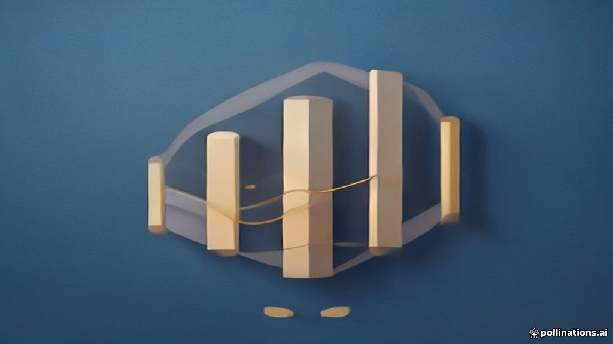

Personal-finance explainers, market briefs, F&O positioning and business stories — all in one place.
India's insurance regulator, IRDAI, wants to change how insurance agents and companies are paid. They've proposed bringing back 'hard caps' on commissions pai.
Regular mutual funds include a commission for distributors, leading to higher expense ratios. Direct mutual funds do not include distributor commissions, resu.
The Indian government is establishing a National Social Security Board for unorganised, gig, and platform workers. This board aims to design and recommend tar.
The Nasdaq 100 index recently entered its third technical correction of 2026, indicating a significant downturn in major US technology stocks. This market mov.
Sovereign Gold Bond (SGB) 2019-20 Series VI is currently open for premature redemption, offering significant returns to eligible investors. The Reserve Bank o.
Financial planning is comprehensive and extends far beyond just investing in mutual funds. Annually reviewing six key areas ensures your financial strategy re.
Indian markets likely faced headwinds today, influenced by negative global cues and sustained selling by Foreign Institutional Investors (FIIs). A significant.
Global markets presented a mixed picture, with US indices closing lower due to tech sector weakness, while Asian markets were split. GIFT Nifty indicates a fl.
Reliance Industries is set to announce its Q2 FY27 results today, October 30, 2026, with analysts anticipating a robust performance. The Oil-to-Chemicals (O2C.
End-of-day reading of India's F&O open interest, PCR, max pain and FII positioning — explained simply.
Missing a loan EMI payment by even a single day can attract late payment charges from your lender. However, a one-day delay typically does not immediately res.
Capital gains tax implications for an NRI selling property in India remain the same, irrespective of whether the buyer is a resident Indian or another NRI. Ta.
Indian equities witnessed a strong rally today, buoyed by positive global cues and robust institutional buying. The Federal Reserve's decision to hold interes.
Global markets ended mixed, with US and European indices closing positive, while some Asian markets saw declines. GIFT Nifty signals a strong positive opening.
A seemingly low Price-to-Earnings (P/E) ratio in bluechip stocks doesn't automatically mean they are a bargain. It's crucial to look beyond the headline P/E a.
End-of-day reading of India's F&O open interest, PCR, max pain and FII positioning — explained simply.
Reliance Industries is building a massive plant in Gujarat to produce 'carbon fibre'. Carbon fibre is a material that is incredibly strong, yet much lighter t.
Sovereign Gold Bond (SGB) Series 2020-21 I investors have seen their initial investment grow significantly upon maturity. The Reserve Bank of India (RBI) fixe.
The Karnataka High Court has upheld the existing amendments to the Employees' Pension Scheme, 1995 (EPS-95). This ruling rejects the plea from a group of reti.
Indian markets closed lower today, with the Nifty slipping 51 points and Sensex falling 353 points. Rising crude oil prices and ongoing Middle East tensions w.
Global markets closed mixed to positive, with US tech leading gains and Asian indices mostly up. GIFT Nifty signals a positive opening bias for the Indian mar.
Indian companies reported their strongest profit growth in ten quarters during Q2 FY27, with net profit rising 27% year-on-year. Net sales also saw robust gro.
End-of-day reading of India's F&O open interest, PCR, max pain and FII positioning — explained simply.
The government recently approved a new **Integrated Transport and Logistics Authority (ITLA)** to manage all types of transport. This authority will work with.
Nippon Life India Asset Management has declared an interim dividend of ₹9.50 per equity share for its shareholders. The company has set October 28, 2026, as t.
Small Finance Banks (SFBs) often offer higher Fixed Deposit (FD) interest rates compared to larger commercial banks. Senior citizens typically receive an addi.
Indian benchmark indices, Nifty and Sensex, closed marginally lower today, influenced by global cues. Elevated crude oil prices and uncertainty surrounding th.

Global markets saw a mixed close, with US and European indices positive, while Asian markets were split, led by a strong Nikkei and weaker Chinese/Hong Kong b.
Indian equity markets are anticipated to face downward pressure due to elevated global crude oil prices. Brent crude holding near a six-month high significant.
End-of-day reading of India's F&O open interest, PCR, max pain and FII positioning — explained simply.
India's retail inflation, measured by the Consumer Price Index (CPI), rose to 5.54% in September 2026. This increase was mainly driven by higher prices for ev.
This month, we look at 56 IPOs that listed between 30 and 60 days ago. 28 of these companies are currently trading above their initial IPO (Initial Public Off.
Many bank branches across India will observe a holiday on October 26, 2026, for various regional festivals and events. The specific holidays, such as Laxmi Pu.
Selling land or property can lead to significant long-term capital gains tax liabilities. Section 54EC of the Income Tax Act offers an exemption if you reinve.
Indian markets staged a notable recovery today, with Nifty 50 closing higher by 0.68% after early losses. Strong domestic institutional investor (DII) buying .
Global Tone:** US markets closed lower, while Asian markets are mixed this morning, suggesting a cautious global sentiment. **GIFT Nifty Bias:** GIFT Nifty is.
Several prominent Indian companies, including Dalmia Bharat, Mazagon Dock, Coal India, NTPC, REC, and Godrej Consumer, are slated to consider dividend payouts.
EAAA India Alternatives Limited IPO is currently open for subscription. BLS Polymers Limited and SFC Environmental Technologies Limited IPOs are opening on Oc.
End-of-day reading of India's F&O open interest, PCR, max pain and FII positioning — explained simply.
The government has launched a nationwide campaign to bring essential banking services closer to you. From October 21 to December 31, 2026, special camps are b.
The Securities and Exchange Board of India (SEBI) has ordered Avadhut Sathe and his academy to refund ₹546.17 crore. This action stems from the academy provid.
The Income Tax Appellate Tribunal (ITAT) recently ruled on claiming capital gains tax exemption for buying two adjoining flats. This ruling clarifies that two.
India's major IT firms showed varied Q2FY27 performances, reflecting a complex market. Tech Mahindra led the pack with the highest growth in both profit and r.
Foreign Portfolio Investors (FPIs) and Domestic Institutional Investors (DIIs) are major players in the Indian stock market. FPIs are overseas funds investing.
The market regulator SEBI has permanently barred Avadhut Dinkar Sathe and his academy, ASTAPL, from the securities market. They have been directed to disgorge.
The 8th Pay Commission is considering increasing the leave encashment limit for central government employees from 300 to 450 days. This proposed change could .
Supreme Petrochem has announced a first interim dividend of ₹2.50 per share for the financial year 2026-27. The company's revenue for Q2 FY27 surged by 77.8% .
SEBI Chairperson Madhabi Puri Buch is leading efforts to make online financial advice more trustworthy. The market regulator recently introduced the Common Ad.